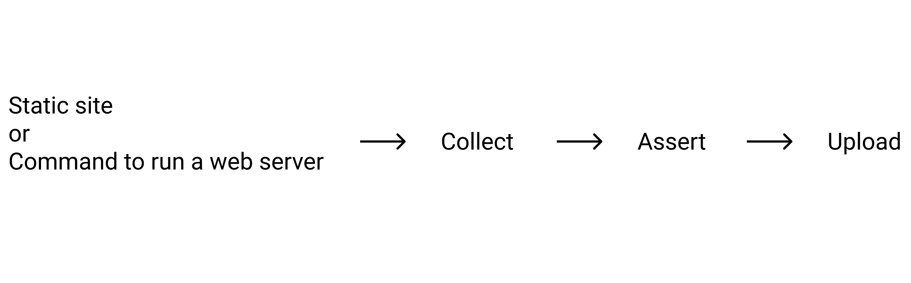
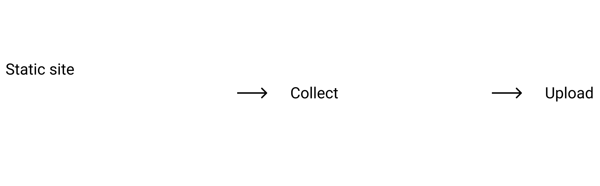
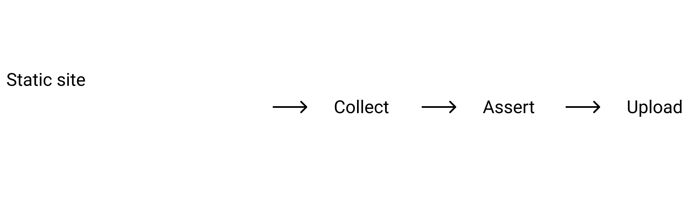

Lighthouse CI入門
@ 2019.12.07 【We Are JavaScripters! 3周年記念】 WeJS Festival ! - connpass
About me

おしながき
- 発表のゴール
- Lighthouse CIとは
- Lighthouse CIの主要なコマンド
- まとめ
- 発表のゴール
- Lighthouse CIとは
- Lighthouse CIの主要なコマンド
- まとめ
Lighthouse CIを使ったことがない人が
主要な機能を理解できるようになる
話すこと
- CLIの主要なコマンドの使い方を、簡単な例を交えて紹介
- 実装例は、yinm/study-lighthouse-ci
話さないこと
- Lighthouse CI Server
- Lighthouseのスコア改善に繋がること
- 発表のゴール
- Lighthouse CIとは
- Lighthouse CIの主要なコマンド
- まとめ
- LighthouseをCIで使いやすいように、assertionなどの機能を使えるようにしたもの
- Lighthouse CIを導入するには、いくつか要件がある
- e.g. 静的サイトか、production環境に近いアセットを配信できるサーバーを立ち上げるコマンドを用意する必要がある
- 詳細: lighthouse-ci/getting-started.md
Lighthouse CIの全体像 (発表内で出てくる部分のみ)

- 発表のゴール
- Lighthouse CIとは
- Lighthouse CIの主要なコマンド
- まとめ
Collect
- Lighthouseを複数回実行して、結果を
.lighthouseci/ディレクトリに保存する - 詳細: lighthouse-ci/cli.md at master · GoogleChrome/lighthouse-ci
以下の画像の部分を実装した例: Install and Collect
Upload
.lighthouseci/ディレクトリを任意の場所に保存する- GitHub status checkに、Lighthouseの実行結果を表示することもできる
- 詳細: lighthouse-ci/cli.md at master · GoogleChrome/lighthouse-ci
以下の画像の部分を実装した例: CI and Upload

Assert
.lighthouseci/が、意図した結果になっているかを検証する- 検証内容は、ESLintのルールのように設定できる
- presetもある (e.g. lighthouse:recommended)
- 詳細:
以下の画像の部分を実装した例: Assert

ここから先は、Lighthouse CIを楽に使えるようにする機能
configuration
- オプションとして渡していたものを、設定ファイルに移すことで編集しやすくなる
.lighthouserc.ymlなど特定の名前にすると、自動的に読み込んでくれる- 設定ファイルがvalidかをチェックするコマンドもある
- 詳細: lighthouse-ci/configuration.md at master · GoogleChrome/lighthouse-ci
- 実装例: Configuration
autorun
- Collect, Assert, Uploadをいい感じのデフォルト設定で実行してくれるコマンド
- 詳細: lighthouse-ci/cli.md at master · GoogleChrome/lighthouse-ci
- 実装例: Autorun
- 発表のゴール
- Lighthouse CIとは
- Lighthouse CIの主要なコマンド
- まとめ
- Lighthouse CIは、LighthouseをCI実行しやすいようにしたもの
- 主要なコマンドに以下がある
- Collect
- Assert
- Upload